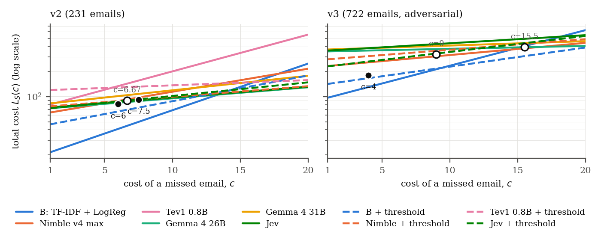

accuracy of the type stored by the production system, against a 57% majority class. Labels written by the agent itself are not ground truth.
Typed decision models vs. a classical baseline vs. a generative LLM for routing a personal multilingual inbox
Independent researcher, Trento, Italy
arXiv:2610.32955 · v4 · November 2026
Email agents decide, for every message, what it is and what to do with it, and almost nobody measures how often they are wrong. On 231 hand-labelled emails from one real inbox, a logistic regression trained on about two hundred labels has the highest point accuracy and is statistically tied with the best hosted model, and accuracy turns out to be the wrong product metric.
The four findings
accuracy of the type stored by the production system, against a 57% majority class. Labels written by the agent itself are not ground truth.
type accuracy of TF-IDF + logistic regression over five seeds of the split (0.788 on the seed in the chart below), the highest point estimate on every field. At least one hosted model is statistically tied with it on each (Holm-corrected McNemar).
of relationships are right when inherited from the contact, on the 55–63% of emails whose sender was seen before (0.86 on all emails, with a majority fallback). A generative model reads the sender's relationship from the text only in part (0.60).
of emails needing a reply or a task are ignored by the classifier, against the best generative model. A cost-chosen threshold brings the classifier to 10%.
Method
Foyer is a self-hosted inbox agent. For each incoming email it decides the type, the urgency and three switches: draft a reply, create a task, or treat it as noise. The paper describes a measurement protocol that produces human labels before any model is trained on them:
Eleven systems are compared on the same emails, in Italian and English: the stored production type, a TF-IDF + logistic-regression baseline, four local and two hosted typed decision models, and three hosted generative LLMs. A third round, sampled adversarially (722 emails in total), tests eleven pre-registered hypotheses: seven are confirmed and four refuted.
Results · 231 emails
Accuracy with 95% bootstrap intervals (2,000 resamples of threads). The baseline is evaluated with thread-grouped 5-fold cross-validation, seed 0; every other system is zero-shot. Table 2 of the paper.
| System | Type acc. [95% CI] | Urgency acc. [95% CI] |
|---|---|---|
| Majority class | 0.571 | 0.697 |
| Stored production type | 0.277 [.22–.34] | 0.684 [.61–.75] |
| B: TF-IDF + LogReg | 0.788 [.73–.85] | 0.736 [.67–.80] |
| Tev1 0.8B, local CPU | 0.623 [.56–.69] | 0.251 [.19–.32] |
| Tev1 4B, local T4 | 0.688 [.62–.75] | 0.450 [.38–.52] |
| Nimble 9B Q8, local T4 | 0.619 [.55–.69] | 0.411 [.35–.48] |
| Jeva-4B, local T4 | 0.498 [.43–.57] | 0.264 [.20–.33] |
| Nimble v4-max, hosted | 0.701 [.64–.76] | 0.714 [.65–.78] |
| Jev 1.14, hosted | 0.727 [.66–.79] | 0.550 [.48–.62] |
| Qwen2.5-7B, hosted gen. | 0.571 [.50–.64] | 0.437 [.37–.51] |
| Gemma 4 26B-A4B, hosted gen. | 0.740 [.68–.80] | 0.628 [.56–.69] |
| Gemma 4 31B, hosted gen. | 0.732 [.67–.80] | 0.645 [.58–.72] |
From labels to actions
Per-email accuracy is not what the user feels. Composed into actions, a wrong "noise" on an email that needed an answer is the expensive mistake.
| System | Draft P / R | Task P / R | False noise, of 68 | Useless tasks |
|---|---|---|---|---|
| Gemma 4 26B-A4B | 0.62 / 0.59 | 0.21 / 0.25 | 3/68 (4%) | 19/24 |
| Gemma 4 31B | 0.63 / 0.64 | 0.19 / 0.25 | 5/68 (7%) | 21/26 |
| Nimble v4-max | 0.65 / 0.61 | 0.15 / 0.25 | 8/68 (12%) | 28/33 |
| Nimble v4-max + cost-chosen threshold | – | – | 3/68 (4%) | – |
| B: TF-IDF + LogReg | 0.80 / 0.47 | 0.71 / 0.25 | 12/68 (18%) | 2/7 |
| B + cost-chosen threshold | – | – | 7/68 (10%) | – |
| Tev1 0.8B | 0.31 / 0.07 | 0.35 / 0.30 | 25/68 (37%) | 11/17 |
Policy "noise wins". False noise = emails needing a reply or a task that the agent ignored. Table 6 of the paper; the thresholded rows (is-noise threshold chosen inside thread-grouped cross-validation to minimise the cost at c = 10) are from the text of the paper. With its threshold, B's false noise is not distinguishable from Nimble's (7/68 vs 8/68, exact McNemar p = 1.0).
Cost

Label quality
Two annotators who saw only sender, subject, date and body labelled the same 60 emails independently.
Paper
Personal email agents decide, for every incoming message, its type and urgency and whether to draft a reply, create a task or ignore it. In production these decisions are delegated to a generative LLM or to rules, and their error rate is rarely measured: the stored labels were written by the system itself. We describe Foyer, a self-hosted personal inbox agent, and a measurement protocol—stratified sampling, a frozen snapshot of the model input, thread-grouped splits, secret redaction, and human labels collected in the agent's own review loop—that produces ground truth before any training. On 231 real emails in Italian and English we compare eleven systems: the stored production type (keyword rules and an earlier LLM classifier), a TF-IDF + logistic-regression baseline, local typed decision models (Tev1 0.8B and 4B, Nimble 9B, Jeva-4B), two hosted ones (Bespoke Nimble v4-max and TypeSafe Jev) and three hosted generative LLMs (Qwen2.5-7B, Gemma 4 26B-A4B and 31B). Four results. First, the stored production type scores 28% against a 57% majority class. Second, with about two hundred labels a logistic regression has the highest point accuracy on every field (type 0.77 ± 0.02 over five seeds of the split, urgency 0.74, needs-reply 0.83, is-noise 0.90) at a latency three orders of magnitude lower, though it never predicts the two rarest types; but on every field at least one hosted model is statistically indistinguishable from it (exact McNemar, Holm-corrected)—Gemma 4 on type (0.74), Nimble v4-max on urgency and is-noise (0.71, 0.86). Third, a generative model recovers part of the sender's relationship to the owner from the text (0.60); inheritance from the contact is right 98.6% of the time on the 55–63% of emails whose sender was seen before (0.86 on all emails, with a majority fallback): the relationship belongs in the contact graph, not in the prompt. Fourth, per-email accuracy is not the product metric: composed into actions, the classifier ignores 18% of the emails that needed a reply or a task, against 4% for the best generative model; a cost-chosen threshold cuts that rate to 10% (7/68), indistinguishable from the hosted decision model's. On the unbiased corpus no cost difference among the leading systems is significant; on the adversarial corpus the thresholded classifier is the cheapest system for any missed-email price above 4. A third, adversarially sampled round (722 emails in total) with eleven pre-registered hypotheses confirms seven and refutes four. Two blind annotators agree with the reference at κ = 0.81 and 0.86 on message type. We release the protocol, the harness and the pre-registration; the emails stay private.
v4 corrects v3 after public reviews: the is-noise threshold and cost results had been computed on a copy of the corpus with bodies truncated to 700 characters. Recomputed on the benchmark corpus (bodies up to 1,500 characters), the thresholded baseline's false noise is 7/68, not 4/68.
@misc{lucca2026measure,
title = {Measure Before You Train: Typed Decision Models vs. a
Classical Baseline vs. a Generative LLM for Routing a
Personal Multilingual Inbox},
author = {Lucca, Federico},
year = {2026},
eprint = {2610.32955},
archivePrefix = {arXiv},
primaryClass = {cs.CL},
url = {https://arxiv.org/abs/2610.32955}
}